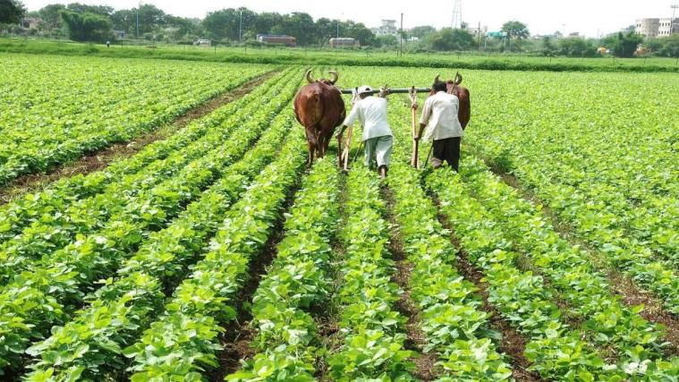

कृषी यांत्रिकीकरण योजना
शेतकरी मित्रांनो, कमी खर्चात जास्तीत जास्त शेती उत्पादनासाठी यांत्रिकीकरण आवश्यक आहे. कृषी यांत्रिकीकरण म्हणजे जेथे शक्य असेल तेथे यांत्रिकीकरणाद्वारे प्राणी आणि मानवी शक्तीची पुनर्स्थापना. कृषी यांत्रिकीकरण योजनेंतर्गत यांत्रिकीकरणासाठी कर्ज व इतर सुविधा पुरविल्या जातात ज्यानुसार शेतकरी कमी किंमतीत जास्तीत जास्त उत्पादन घेऊ शकतील. कृषी यांत्रिकीकरण योजना 2021 अंतर्गत ट्रॅक्टर, श्रेडर, उडणारी फॅन, औषध फवारणी पंप, डस्टर, सिंचन पंप इत्यादी सुविधा ग्रामीण बँकेमार्फत पुरविल्या जातात. अशाप्रकारे, मागील पाच वर्षात कृषी यांत्रिकीकरण योजनेंतर्गत महाराष्ट्रातील लाभार्थ्यांना लाभ देण्यात आला आहे.